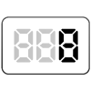
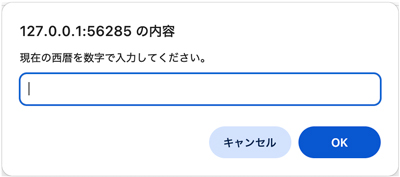
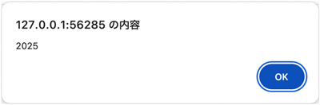

【008】ダイアログに入力した値を表示

- プロンプト例
JavaScriptのprompt()について解説して
- 「window.prompt()」 は、ユーザーにテキストを入力するように促すダイアログをオプションのメッセージと共に表示し、ユーザーがテキストを送信するかダイアログをキャンセルするまで待機するようにブラウザーに指示します
- 一般的には「window.」は、省略されます
🧩 prompt() とは？
prompt(message, default)
| 引数 | 説明 |
|---|---|
| message | ダイアログに表示するメッセージ |
| default | 入力欄に最初から表示される初期値（省略可） |
戻り値
- 入力された文字列（string）
- キャンセルが押された場合 → null
📌 基本例
let name = prompt('あなたの名前を入力してください'); console.log(name);
👉 ユーザーが「太郎」と入力 → name は "太郎"
✏ 初期値つきの例
let age = prompt('年齢を入力してください', '20');
→ 入力欄に最初から「20」が表示されます。
❌ キャンセル時の挙動
let result = prompt('何か入力してください'); if (result === null) { console.log('キャンセルされました'); } else { console.log('入力:', result); }
⚠ 注意点（重要）
① 常に 文字列 として返る
let num = prompt('数字を入力'); console.log(typeof num); // string
→ 数値として使う場合は 変換が必要
let num = Number(prompt('数字を入力'));
② UIが古く、実務ではほぼ使われない
- デザインのカスタマイズ不可
- モバイルでは使いづらい
- ユーザー体験が悪い
👉 実務では HTMLフォーム + JavaScript が主流
🆚 alert / confirm との違い
| 関数 | 役割 | 戻り値 |
|---|---|---|
| alert() | メッセージ表示 | なし |
| confirm() | OK / キャンセル | true / false |
| prompt() | 入力 | 文字列 / null |
🎯 実践サンプル
let a = Number(prompt('1つ目の数字')); let b = Number(prompt('2つ目の数字')); alert(`合計は (${a} + ${b}) です`);
🧠 まとめ
- prompt() は 入力用のポップアップ
- 戻り値は文字列
- 学習用には便利、実務では非推奨
問題
- 現在の西暦を入力して表示

